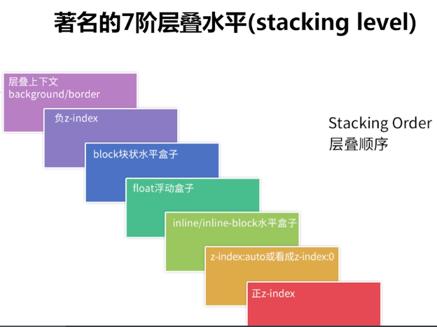
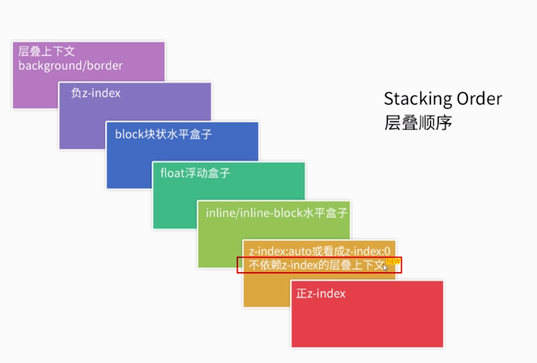

z-index基本用法
- 含义
指定元素及其子元素的z顺序，较大z-index值的元素会覆盖较小的那个 - 值
z-index: auto定位元素默认值z-index: <integer>整数值z-index: inherit继承 - 基本特性
支持负值;
支持CSS3 Animation;
在CSS2.1时代需要和定位元素配合使用;
z-index与CSS定位属性
z-index只对定位元素(relative,absolute,fixed,sticky)有作用
若定位元素没有发生嵌套(子元素均为static或者无子元素)：
后来居上
123<!-- 显示为2覆盖1 --><img src="1.img" style="position: absolute"><img src="2.img" style="position: relative">哪个
z-index大哪个在前123<!-- 显示为1覆盖2 --><img src="1.img" style="position: absolute; z-index: 2"><img src="2.img" style="position: relative; z-index: 1">若定位元素发生嵌套:
祖先优先原则(前提
z-index为数值而非auto):1234567<!-- 存在嵌套则优先考虑祖先元素，故第二个div覆盖第一个div --><div style="position: relative; z-index: 1"><img src="1.img" style="position: absolute; z-index: 2"></div><div style="position: relative; z-index: 1"><img src="1.img" style="position: absolute; z-index: 1"></div>z-index为auto1234567<!-- 此时第一个div覆盖第二个div --><div style="position: relative; z-index: auto"><img src="1.img" style="position: absolute; z-index: 2"></div><div style="position: relative; z-index: 1"><img src="1.img" style="position: absolute; z-index: 1"></div>
CSS中的层叠上下文和层叠水平
CSS中哪些元素具有层叠上下文?
1.页面根元素天生具有层叠上下文,称之为”根层叠上下文”;
2.z-index值为数值的定位元素也具有层叠上下文；
3.z-index值不为auto的flex项(且父元素display: flex或display: inline-flex)
4.元素的opacity不为1
5.元素的transform不为none
6.元素的mix-blend-mode不为normal
7.元素的filter不为none
8.元素的isolation不为isolate
9.position: fixed(chrome等blink/webkit内核浏览器)
10.will-change属性值为上面任意一个
11.-webkit-overflow-scrolling设为touch
层叠上下文中的每个元素都有一个层叠水平(stacking level)，决定了同一个层叠上下文中元素在z轴上的显示顺序。
层叠水平和z-index不一样，普通元素也有层叠水平
层叠上下文特性:
1.层叠上下文可以嵌套，组合成一个分层次的层叠上下文
2.每个层叠上下文和兄弟元素独立:当进行层叠变化或渲染的时候只需要考虑后代元素
3.每个层叠上下文是自称体系的:当元素的内容被层叠后，整个元素被认为是在父层的层叠顺序中
理解元素的层叠顺序
表示元素发生层叠时有着特定的垂直显示顺序

z-index与层叠上下文
定位元素默认
z-index: auto可以看作z-index: 0本质上,
z-index: auto不创建层叠上下文,z-index: 0会创建层叠上下文，所以还是有区别的（IE7下都会创建）z-index不为auto的定位元素会创建层叠上下文z-index层叠顺序的比较止步于父级层叠上下文
z-index与其他CSS属性层叠上下文
1.不依赖z-index就具有层叠上下文的元素层叠顺序均为z-index: auto级别

2.依赖z-index的层叠上下文元素(定位元素及display:flex或display: inline-flex容器的子flex项)的层叠顺序取决于z-index值
z-index相关实践
- 最小化影响原则
目的: 避免z-index嵌套层叠关系混乱
原因: 元素层叠水平主要由所在层叠上下文决定；IE7下z-index: auto也会创建层叠上下文
做法: 避免使用定位属性;定位属性从大容器平级分离为私有小容器 - 不犯二准则
目的： 避免z-index混乱，一山比一山高的样式问题
原因： 多人协作以及后期维护
做法： 对于非浮层元素，避免设置z-index，无法避免的情况下也不要超过2 - 组件层级计数器
目的： 避免浮层组件因z-index被覆盖的问题
原因： 意想不到的高层级元素；组件的覆盖规则具有动态性
做法： 组件层级计数器(通过js获取body下最大z-index值) - 负值
z-index与可访问性隐藏z-index负值元素在层叠上下文的背景之上，其他元素之下